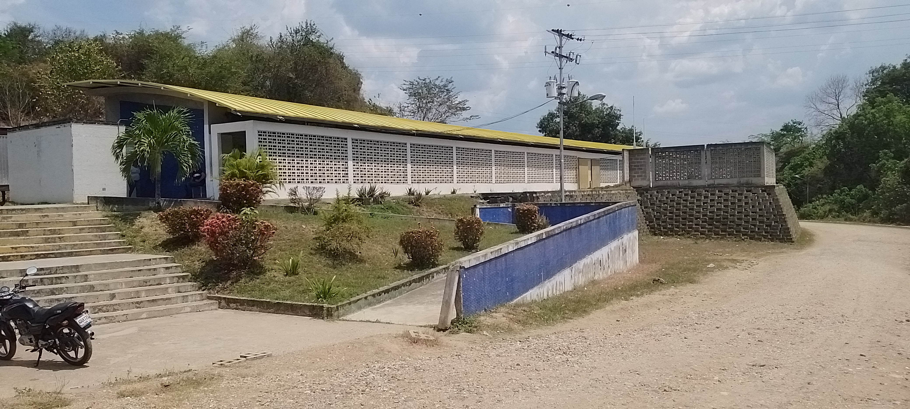
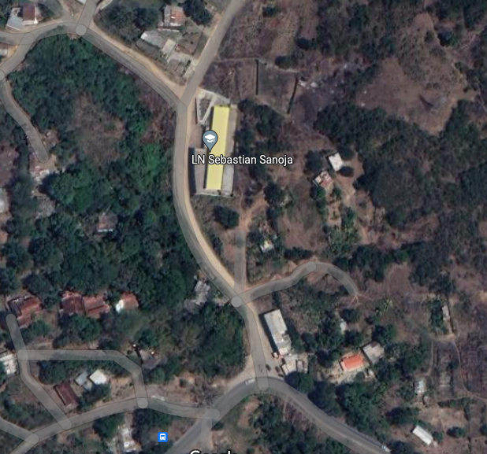
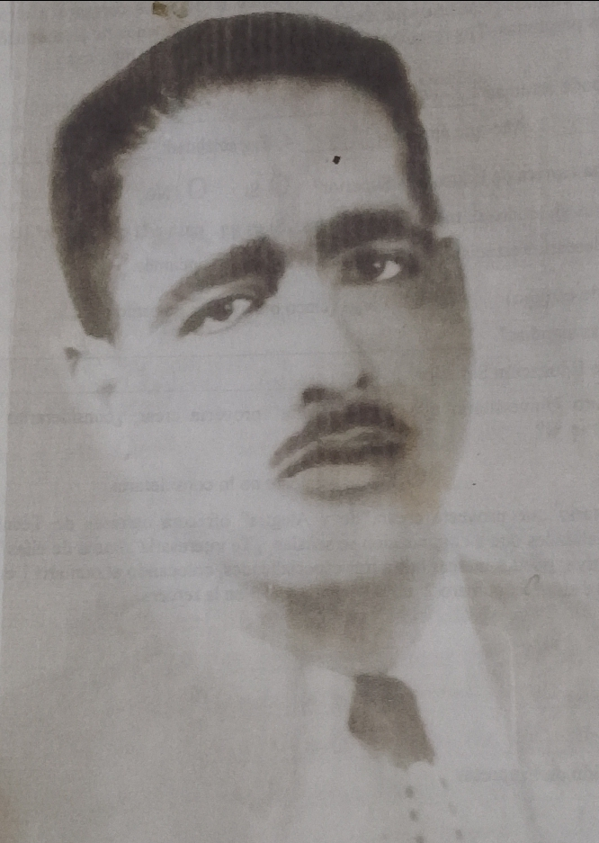

Unidad Educativa Nacional Sebastián Sanoja
La Unidad Educativa Nacional “Sebastián Sanoja”, de carácter oficial, creada en Mayo de 2014, localizada en la carretera Nacional Yare- Santa Teresa, Sector “Hacienda La Culta”, ofrece educación formal e integral en la modalidad de Educación Media General, la cual comprende dos secciones desde primer año hasta quinto año La Unidad Educativa cuenta con la participación y representación de los ciudadanos que la conforman, revisa, articula y ajusta los Acuerdos de Convivencia Escolar y Comunitario, y lo representa como un instrumento que en su practica garantiza y fortalece la convivencia pacifica y la formación integral de personas con miras a la superacion y el cambio.

Está enmarcado en las políticas y normativas legales que rigen el proceso educativo en Venezuela, La Constitución de la República Bolivariana de Venezuela, La Ley Orgánica de Educación para la protección de Niños, Niñas Y Adolescentes (LOPNNA), además del Reglamento del Ejercicio de la Profesión Docente, Resoluciones, Circulares, Ordenanzas Municipales y otras afines con el Subsistema de Educación Básica y Area de Proteccion, demás normativas juridicas venezolanas que rigen sobre la materia.
Su carácter participativo compromete su cumplimiento y desarrollo, promoviendo desde el ámbito educativo el crecimiento de la institución y el progreso integral de quienes la conforman, todo ello a luz de los valores, el respeto por el otro y la construcción de actividades positivas que soporten el compromiso de asumir y practicar las normas basicas de la convivencia escolar.
Ubicacion
La Culta, Santa Teresa del Tuy,1215, Miranda

Bandera
Escudo
Himno
História De La U.E.N "Sebastián Sanoja”
Profesores Fundadores
Historia de la Bandera
Nuestra bandera tiene un origen un dia lunes 18-04-20, en las aulas del plantel, en un proceso que se inicio por visitantes de la profesora Lenni Ramirez (en ese entonces Directora) quien en Consejo Nacional acato que se tiene un escudo e imno institucional y por lo tanto ejercio al profesor Hernandez Victor formentar el origen de esta.
A raiz de esta votacion se inicio la creacion de la bandera con la participacion de los estudiantes de primero y segundo año. Estos en el area de formacion de Arte y Patrimonio bajo la observacion de profesor Victor quien les expreso algunas ideas en cuanto al color, tamano, distribucion de elementos del Escudo que deberia tener la bandera. Todos los estudiantes participaron y se califico que el diseno ganador, corresponde al realizado por los estudiantes de primero “A”.
Esta bandera destaca en letras negras y mayusculas el nombre de nuestro efronimo Prof. Sebastian Sanoja igualmente en la parte derecha superior se encuentra nuestro arbol que acobija un libro abierto propio de conocimiento impartido por los profesores hacia sus educados, igualmente del lado izquierdo vemos la herradura que simboliza trabajo, con los colores de nuestra bandera nacional y en la parte interior de esta los valores que nos representan : respeto, igualdad, ezfuerzo y paz. El fondo de nuestra bandera tiene dos tonalidades de color azul, uno claro y otro oscuro que indica la serenidad, tranquilidad que debe prevaler a la hora de afrontar nuevos retos y se destaca donde nos encontramos ubicados especificamente en el Estado Bolivariano de Miranda, Sector La Culta Santa Teresa del tuy
Quien Fue Sebastián Sanoja?

Sebastian Sanoja pertenece a esa generacion de maestros cuya dedicacion a la ensenansa lo hizo que le llamaran maestro general, fueron sus alumnos y aquellos que aun no fueron, vinieron en el por ser cuya inclinacion fue siempre hacia ese lugar que un ciudadano adquiere, sintiendose pesenne la sabia naturaleza del Educador.
Nacio en San Francisco de Yare, en la calle el teque el 27 de Julio de 1924, su madre fue la senora Euloquia Sanoja.